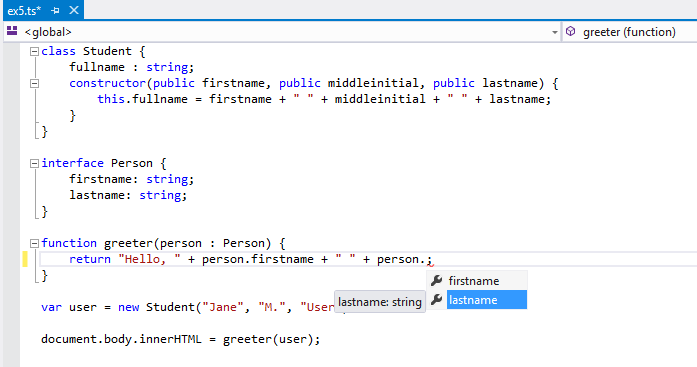

让我们使用TypeScript开始构建一个简单的web应用程序。
安装TypeScript
有两种主要的方式获取TypeScript工具。
- 通过npm（Node.js包管理器）
- 安装TypeScript的Visual Studio插件
Visual Studio2015和Visual Studio 2013 Update 2默认包含了TypeScript。如果你没有安装包含TypeScript的Visual Studio ，你仍然可以下载。
使用NPM的开发者：
npm install -g typescript
创建第一个TypeScript文件
在编辑器中创建greeter.ts文件，并输入以下JavaScript代码：
function greeter(person) {
return "Hello, " + person;
}
var user = "Jane User";
document.body.innerHTML = greeter(user);
编译代码
虽然我们使用了.ts作为文件扩展名，但是这些代码仅仅是JavaScript代码。你可以将代码直接复制粘贴到已有的JavaScript应用程序中。
在命令行中运行TypeScript编译器：
tsc greeter.ts
其结果你得到一个包含相同JavaScript代码的greeter.js文件。在我们启动和运行的JavaScript应用程序中使用TypeScript。
现在我们可以开始利用TypeScript提供的新工具。给函数参数‘person’添加: string类型注解，如下所示：
function greeter(person: string) {
return "Hello, " + person;
}
var user = "Jane User";
document.body.innerHTML = greeter(user);
类型注解
类型注解在TypeScript中是记录函数或变量约束的简便方法。在这个示例中，我们想要在调用greeter函数时传入一个字符串类型参数。我们可以尝试在调用greeter函数时变为传入一个数组：
function greeter(person: string) {
return "Hello, " + person;
}
var user = [0, 1, 2];
document.body.innerHTML = greeter(user);
重新编译，将看到一个错误：
greeter.ts(7,26): Supplied parameters do not match any signature of call target
同样，在调用greeter函数时尝试不传入任何参数。TypeScript将会告诉你调用这个函数时需要带一个参数。在这两个示例中，TypeScript基于你的代码结构和类型注解可以提供静态分析。
注意，虽然有错误，但是仍然编译创建了greeter.js文件。即使你的代码中有错误，你仍旧可以使用TypeScript。但是在这种情况，TypeScript会发出警告：你的代码可能不能按照你预想的那样运行。
接口
让我们进一步开发我们的demo。 在这里我们使用一个接口，它描述了具有firstName和lastName字段的对象。在TypeScript中，如果两个类型其内部结构兼容，那么这两种类型兼容。这使我们实现一个接口，仅仅只需必要的结构形状，而不必有明确的implements子句。
interface Person {
firstName: string;
lastName: string;
}
function greeter(person: Person) {
return "Hello, " + person.firstName + " " + person.lastName;
}
var user = { firstName: "Jane", lastName: "User" };
document.body.innerHTML = greeter(user);
类
最后，让我们最后一次使用类来继续开发demo。TypeScript支持新的JavaScript特性，像基于类的面向对象编程的支持。
在这里，我们创建一个具有构造函数和一些公共字段的Student类。注意：类和接口的良好配合使用，决定一个程序员的抽象水平。
此外，在构造函数参数中使用public是一种简写形式，它将自动创建具有该名称的属性。
class Student {
fullName: string;
constructor(public firstName, public middleInitial, public lastName) {
this.fullName = firstName + " " + middleInitial + " " + lastName;
}
}
interface Person {
firstName: string;
lastName: string;
}
function greeter(person : Person) {
return "Hello, " + person.firstName + " " + person.lastName;
}
var user = new Student("Jane", "M.", "User");
document.body.innerHTML = greeter(user);
再次运行tsc greeter.ts，你将看到生成的JavaScript代码和以前的一样。TypeScript中的类只是对于经常在JavaScript中使用了相同的基于原型的面向对象的简写。
运行TypeScript web应用程序
现在在greeter.html中输入以下代码：
<!DOCTYPE html>
<html>
<head><title>TypeScript Greeter</title></head>
<body>
<script src="greeter.js"></script>
</body>
</html>
在浏览器中打开greeter.html去运行第一个TypeScript web应用程序demo！
可选：在Visual Studio中打开greeter.ts，或者复制代码到TypeScript学习乐园中。你可以将鼠标悬浮到标识符上查看类型。注意，在某些情况下这些类型会为你自动推断。重新输入最后一行，查看完成列表和基于DOM元素类型的参数帮助。将光标放到引用greeter函数的地方，并且按下F12键去转到定义。同样注意，你也可以在符号上右击使用重构来重命名。
所提供的类型信息和工具以及JavaScript在应用程序中一起工作。TypeScript更多可能性的示例，请浏览网站的案例。
